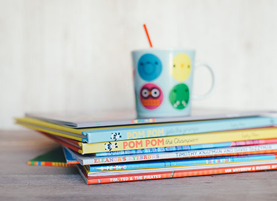

Policies and Procedures
Interaction
We practice & encourage positive relationships & experiences within care as well as the wider community as this forms a child’s sense of “Belonging, being and becoming”. These interactions will play a vital role in forming a child’s individual self-identity and there overall wellbeing.
Positive Role Modelling
With every practice and step we take it is one of on-going positive role modelling. To practice what we preach or to act out what we teach to the children. Our intentions are to speak fairly, openly, ethically and inclusively. With this commitment we model respect, diversity, cultural understanding and cultural awareness. From this experience the children begin to establish thoughts of what is fair and what is unfair.
Enrolement and Orientation
On arrival new families as well as existing families & children will be greeted with images on the entrance wall of diverse range of artefacts from a variety of cultures in order to cover the majority of nationalities and religions of the community. There will be Welcome sign’s in several different languages. The enrolment and orientation experience will be catered to each individual child and their familie’s requirements.
Extra support can be arranged, encouraged and offered if English is the second language. This is very important when completed the enrolment forms were the use centres interpreter may be required.
Additional research and knowledge on their cultures, heritage, background and traditions is researched so there is a trusting , respectful, and understanding relationship. This contact and research for thorough knowledge can extend into a six monthly review. Families are encouraged to share their experiences upbringing & customs. In turn we can honour and represent their culture in the education program, routines and transitions.
Confidentiality - Privacy Legislation Policy
Joyfull Childhood Family day care follow and implement The privacy Act 1998, which is the Australian Law which regulates the handling of personal information of an individual. This includes collection, storage, use and disclosure of personal records.
Planning and Programming - Cultural Awareness curriculum
*Harmony Day Celebration Held on 21st March
This event supports individual cultural identities and marks, represents, enhances and celebrates Australia s rich and wonderful diversity of cultures Children participate in play based cultural experiences such as traditional art, cooking, dress ups in traditional costumes, basic language, music, and dance of popular customs and lifestyles from around the world.
Local Aboriginal & Torres Strait Islander Education
Identifying the history of Aboriginals on the land the service is held on. Guest speaker of the local Aboriginals is invited to demonstrate songs, Dreamtime stories, dances and information to the children with interactive traditional dot painting, (Corroboree) dancing, flag designing and bush tucker trail adventures. The learning of Custodianship (To care for something like the earth respectfully) Teaching though site, touch and sound of nature derived traditional aboriginal musical instruments ( eg clapsticks ) , tools (eg for hunting- boomerang, digging and painting artefacts ), bush tucker (such as Bunya nuts).
Local community representation Education Program
Aim to increase staff and family member’s knowledge and appreciation of culture within the service as well as disabilities and gender equality. Providing informative child appropriate resources such as the following;
- Books, photos, posters, puzzles, & materials to reflect the cultural lifestyles of the children in Care and local community,
- To expose them to different dialects and languages,
- Visual Posters of realistic representations rather then just stereotypical.
Portrayal of broad range of cultures. People should not only be depicted in an image in traditional costumes acting out traditions but be portrayed in daily life image as well Posters that reflect fairness such as men and women participated in same and or similar occupations and people with disabilities engaging work and in recreation, such as the folllowing;
- Art resources, such as paints and crayons to reflect variety of skin tones,
- Music, song and dance from other cultures,
- Provide and encourage recycled materials such as hemp, nature derived craft resources, wood, and organic cotton. In order to teach sustainability,
- Establish a sustainable an on-going vegetable garden project with a worm farm to teach care, admiration, connection, knowledge and respect for the environment,
- Introduce an age appropriate safe small pet to the care centre to form a connection to life around us. To familiarise them with care and responsiblities associated with owning a living animal. Such as their need for shelter, comfort, fresh food & water.
Working in Partnership and Communicating with Families
Our staff aim to express an openness, warmth, welcoming and friendly mannerism and to actively listen to children, family and the community in order to show that the centre values their identity ,lifestyle and customs. Staff will also be expected and encouraged to do the following;
- Share some of their own features of their culture to encourage the children and their famiies to share their own;
- Encourage families to submit copies of photographs to put up on display for the children;
- To commit and enquire about if and when families celebrate special events;
- Making available the use of an interpreter or information in another language if necessary;
- Colaborating with staff about having any knowledge of the child and family;
- Introduce and arrange someone willing to share their stories from the community to the children
- Work in partnership with peers, mentor’s , specific agencies or others to support a child’s individual cultural needs.